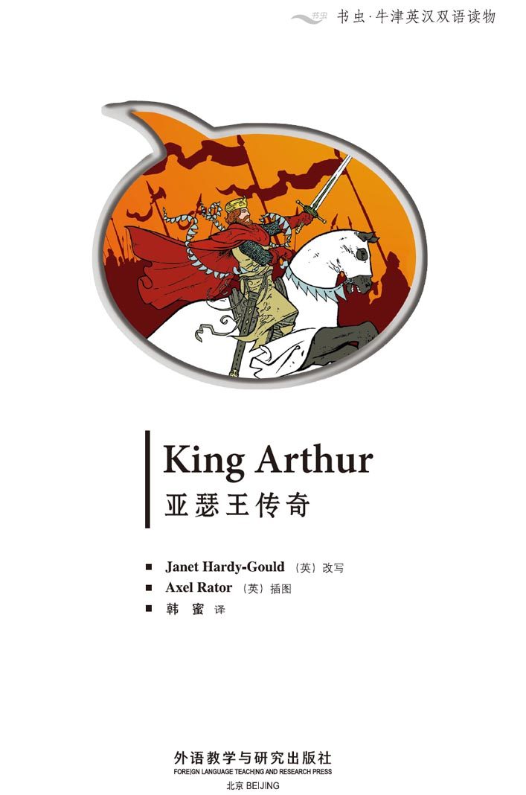
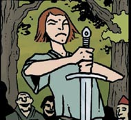
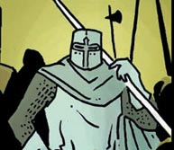
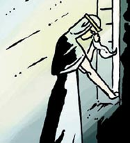
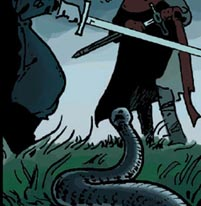
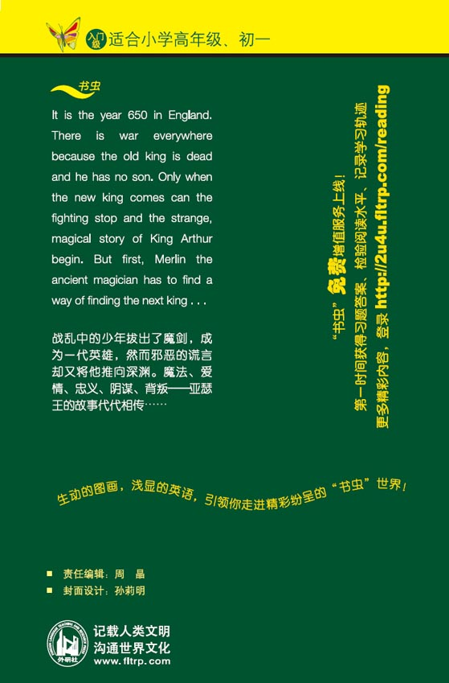

扉页

Copyright
Copyright © Foreign Language Teaching and Research Press 2006
All rights reserved. No part of this publication may be reproduced or distributed by any means, or stored in a database or retrieval system, without the prior written permission of Foreign Language Teaching and Research Press.
本书版权由外语教学与研究出版社独家所有。如未获得该社书面同意，书中任何部分之文字及图片，不得用任何方式抄袭、节录、翻印或存储利用于任何数据库及检索系统等。
Published by Foreign Language Teaching and Research Press
No. 19 Xisanhuan Beilu
Beijing, China 100089
http://www.fltrp.com
版权页
京权图字 01-2006-2796
Originally published by Oxford University Press, Great Clarendon Street, Oxford. © 2001 This edition is licensed for sale in the People's Republic of China only and not for export therefrom.
'Oxford' is a registered trademark of Oxford University Press.
图书在版编目(CIP)数据
亚瑟王传奇／（英）哈迪-古尔德（Hardy-Gould, J.）改写．—北京：外语教学与研究出版社，2006.5（2013.12重印）
（书虫·牛津英汉双语读物）
书名原文：King Arthur
ISBN 978-7-5600-5418-6
Ⅰ．亚… Ⅱ．哈… Ⅲ．①英语—汉语—对照读物 ②漫画—作品—英国—现代 Ⅳ．H319.4: J
中国版本图书馆CIP数据核字（2006）第019035号
出版人：蔡剑峰
责任编辑：周 晶
封面设计：孙莉明
出版发行：外语教学与研究出版社
社 址：北京市西三环北路19号（100089）
网 址：http://www.fltrp.com
书 号：ISBN 978-7-5600-5418-6
* * *
制售盗版必究 举报查实奖励
版权保护举报电话：（010）88817519
目录
King Arthur
ACTIVITIES Before Reading
ACTIVITIES
Before Reading
1. Look at the picture on the cover of the book. Now answer these questions.
1) Where do you think the story happens?
a Japan.
b England.
c Spain.
d Australia.
2) When do you think the story happens?
a Ten years ago.
b Fifty years ago.
c A hundred years ago.
d Over a thousand years ago.
2. Read the back cover of the book. Which of these words do you think are in the story? Put a tick next to them. Perhaps not all of them are in the story. Why not?
| horse | soldier | gun |
| car | pop star | castle |
| bicycle | queen | supermarket |
| ride | marry | America |
| drive | sword | village |
ACTIVITIES While Reading
ACTIVITIES
While Reading
1. Answer these questions.
Who ...
1) puts the sword in the stone? Why?
2) pulls the sword out of the stone?
3) is Arthur's half-sister? What can she do?
4) wins the battle?
2. Are these sentences true (T) or false (F)?
1) Arthur and Guinevere talk for a long time.
T/F
2) Merlin wants Arthur to marry Guinevere.
T/F
3) Merlin builds a new castle.
T/F
4) Merlin shows Arthur a magic sword.
T/F
3. Now answer these questions.
1) What does Guinevere give Arthur?
2) Who fights a lot of different men?
3) Who is the strongest knight in England?
4) Why are the people in the villages happy?
4. Who says these words?
1) 'You must be king, my son.'
2) 'Be careful, Arthur. Mordred is a bad man.'
3) 'Oh Lancelot. You're very strong!'
4) 'Perhaps Guinevere and Lancelot are in love.'
5) 'Leave Camelot now, before I kill you.'
5. Are these sentences true (T) or false (F)?
1) Guinevere is happy because Lancelot leaves Camelot.
T/F
2) Arthur fights a battle against Lancelot.
T/F
3) Mordred puts Guinevere in prison.
T/F
4) Arthur wants to fight Mordred on the next day.
T/F
6. Can you guess what happens?
1) Arthur breaks his magic sword.
Yes/No
2) Arthur kills Mordred.
Yes/No
3) Mordred kills Arthur.
Yes/No
4) Lancelot arrives and kills Mordred.
Yes/No
5) Arthur is king of England again.
Yes/No
6) Arthur dies and Merlin takes him away.
Yes/No
7) Guinevere marries Lancelot.
Yes/No
ACTIVITIES After Reading
ACTIVITIES
After Reading
1. Put these nine sentences in the right order.
a Lancelot leaves Camelot.
b Lancelot is the first knight of the Round Table.
c Arthur pulls the sword out of the stone.
d Arthur wants to fight a battle against Lancelot.
e Merlin makes a magic stone and puts a sword in it.
f Mordred hits Arthur with a sword.
g Morgan and Mordred arrive one night at Camelot.
h Arthur leaves in a boat with Merlin.
i Arthur marries Guinevere.
2. Who says this? Who do they say it to?
1) 'Don't be afraid! With my help you can be king.' _________ says this to _________.
2) 'Shall I fight in your name?' _________ says this to _________.
3) 'Guinevere and Lancelot are often together.' _________ says this to _________.
4) 'No ... no ... not today. Let's fight tomorrow.' _________ says this to _________.
5) 'Find Guinevere and look after her.' _________ says this to _________.
3. Look at each picture, then answer the questions after it.

1) Who is this?
What is he doing?

2) What is this?
Who builds it?

3) Who is this?
4) Who is this?

5) Who is this?
Why is she crying?

6) Who are these people?
What happens next?
7) Who is this? What happens next?
参考译文
参考译文
King Arthur
亚瑟王传奇
It is the year 650 in England. There is no king and people are fighting.
One night Merlin the magician has a dream ...
In the morning ...
I see a wonderful king. His name is Arthur! How can I find him?
Merlin makes a magic stone. He puts a sword in it. Only the true king can pull out the sword.
You are not the true king.
这是650年的英格兰。当时没有国王，人们一片混战。
一天晚上，魔法师墨林做了一个梦……
早上……
我看到了一位伟大的国王。他叫亚瑟！我怎么才能找到他？
墨林做了一块魔法石。他往石头中插入一把剑。只有真正的国王才能拔出剑。
你不是真正的国王。
Shall I try?
You're only a boy!
Try, son! Let's all have a good laugh!
Arthur pulls hard.
Who are you?
What's your name?
Arthur.
Our new king!
But I don't know how to be king.
我能试试吗？
你只是个孩子！
试试吧，孩子！让我们都好好乐一乐！
亚瑟用力拔剑。
你是谁？
你叫什么名字？
亚瑟。
我们的新国王！
但我不知道怎么当国王。
Suddenly ...
Who are you?
Don't be afraid, Arthur! My name is Merlin. With my help you can be king.
The next day many important people come to see Arthur.
He's very young.
Who are those people?
That's your half-sister, Morgan, and her son, Mordred. She can see into the future.
Merlin teaches every day, and after four years he is a strong, good king.
突然……
你是谁？
别害怕，亚瑟！我叫墨林。有了我的帮助，你就能成为国王。
第二天，很多重要的人物都来看亚瑟。
他很年轻。
那两个人是谁？
那是你同父异母的姐姐摩根，还有她的儿子莫德雷德。她能看到未来。
墨林每天教导亚瑟，四年后，他成为了一名强有力的好国王。
One morning, a soldier visits Arthur.
The lords from the North are coming to fight you.
Go now and fight, Arthur!
Go faster, man!
When they arrive there is a long battle.
Oh, no!
Help!
Hours later most of the other soldiers are dead.
Arthur is King of all England!
We can win every battle now!
一天早上，一名士兵来拜见亚瑟。
北方的诸侯们来攻打您了。
现在去战斗吧，亚瑟！
再快点儿，弟兄们！
他们到达后，战斗持续了很长的时间。
哦，不！
救命！
几个小时后，其他军队的大部分士兵都死了。
亚瑟是整个英格兰的国王！
现在我们战无不胜！
Come to my castle. Let's eat and drink all night!
Have some more food everybody!
Ha, ha, ha!
Do you know my daughter Guinevere?
No ... it's very nice to meet you.
Arthur and Guinevere talk all evening.
When Arthur comes back ...
I want to marry Guinevere.
No ... no ... Arthur!
来我的城堡吧。让我们整晚尽情欢宴！
大家都多吃点儿！
哈哈哈！
您认识我女儿吉尼维尔吗？
不……非常高兴见到您。
亚瑟和吉尼维尔聊了一个晚上。
亚瑟回来的时候……
我想娶吉尼维尔为妻。
不……不……亚瑟！
I see a dark future for you and Guinevere. Don't marry her!
I am King and I choose my Queen!
Arthur builds the castle of Camelot.
Here's the new castle for my future Queen.
Arthur, I must speak to you ...
What's the matter?
I must leave you now. I am losing my magic. Come with me, Arthur.
我看到了你和吉尼维尔黑暗的未来。不要娶她！
我是国王，我选择自己的王后！
亚瑟修建了卡米洛城堡。
这是我未来王后的城堡。
亚瑟，我必须和你谈谈……
怎么了？
现在我得离开你了。我正在失去我的魔力。跟我来，亚瑟。
Looking into the water.
Take the magic sword. You need this for your battles.
Thank you!
Be careful. Don't break it — without your sword you are nothing.
Goodbye, Arthur.
看水里。
拿着这把有魔法的剑。你打仗需要它。
谢谢！
小心。别折断它——没有你的剑，你什么都不是。
再见，亚瑟。
Three weeks later Arthur marries Guinevere.
Good luck!
Two people stand alone ... Morgan and her son, Mordred.
I see an unhappy future for Arthur and Guinevere!
Guinevere gives Arthur a large round table.
The strongest knights in England can sit at this table!
I want to find the best knights in the country. Let's have a competition today!
三个星期后，亚瑟和吉尼维尔结婚了。
祝福你们！
有两个人远离人群站在一边……摩根和她的儿子莫德雷德。
我看到亚瑟和吉尼维尔的未来并不幸福。
吉尼维尔送给亚瑟一张大圆桌。
英格兰最强的骑士才能坐在这张桌前！
我想找出全国最好的骑士。我们今天来比赛吧！
Can I fight first?
Gawain fights many different men. Nobody can beat him.
Is Gawain the strongest knight in England?
No, I am!
Who are you? I can't see your face.
Let's watch him fight. We can see his face later.
Shall I fight in your name, Queen Guinevere?
Yes. Good luck!
我能先打吗？
高文和不同的人打了很多场。没人能打败他。
高文是英格兰最强的骑士吗？
不，我才是！
你是谁？我看不到你的脸。
我们看他比赛吧。然后我们再看他的脸。
我能以您的名义战斗吗，吉尼维尔王后？
可以。祝你好运！
Come on, Gawain!
Oh dear!
Oh no!
What's your name?
Lancelot.
Lancelot is the strongest man in all England. He can be the first knight of the Round Table!
加油，高文！
哦，天哪！
哦，不！
你叫什么名字？
兰斯洛特。
兰斯洛特是全英格兰最强的骑士。
他可以成为第一名“圆桌”骑士！
Soon, knights come from all over the country. They sit at the Round Table.
Arthur and Guinevere are very happy together.
You're our best friend, Lancelot.
And in the villages ...
King Arthur, thank you! We have lots of food to eat.
We have a strong king at last! There is no more fighting.
Guinevere and Lancelot often go riding together.
Look at these beautiful flowers.
不久，全国各地的骑士都来了。他们坐在了“圆桌”前。
亚瑟和吉尼维尔过得非常幸福。
你是我们最好的朋友，兰斯洛特。
在村庄里……
亚瑟王，感谢您！我们有很多东西吃。
我们终于有了一位强大的国王！
再也没有战争了。
吉尼维尔和兰斯洛特经常一起去骑马。
看这些美丽的花。
One night, Morgan and Mordred arrive at Camelot.
Where is King Arthur?
Hello Morgan! Come in. Would you like to stay?
Yes.
Morgan and Mordred stay for weeks ... They are very friendly to Guinevere and Arthur.
What a beautiful castle!
Thank you.
But later ...
When I look into the future I see King Arthur is dead. You must be king, my son!
Yes, mother.
一天晚上，摩根和莫德雷德来到卡米洛。
亚瑟王在哪儿？
你好，摩根！请进。你愿意住在这里吗？
好啊。
摩根和莫德雷德住了好几个星期……他们对吉尼维尔和亚瑟很友好。
多漂亮的城堡！
谢谢。
但后来……
我看到未来，亚瑟王死了。你一定会成为国王，我的儿子！
是的，妈妈。
One morning Arthur visits Morgan.
Guinevere and I have no son or daughter. Mordred can be king when I die.
Thank you, dear brother. But you are very young ...
Be careful, Arthur. Mordred is a bad man.
Arthur tells Guinevere about the dream.
Don't worry. It's only a dream.
Morgan and Mordred are nice people.
I can see into the future. There is no Arthur, no castle, and you are king!
一天早上，亚瑟去找摩根。
吉尼维尔和我没有儿女。我死后莫德雷德可以当国王。
谢谢，亲爱的弟弟。但你还很年轻呢……
小心，亚瑟。莫德雷德是坏人。
亚瑟把这个梦告诉了吉尼维尔。
别担心。这只是个梦。摩根和莫德雷德是好人。
我看到了未来。没有亚瑟，没有城堡，而你是国王！
Arthur and his knights often ride into the country.
Let's go!
Faster!
They come back with many stories. Guinevere listens excitedly.
Oh Lancelot. You're very strong!
Every evening the knights eat and drink together.
亚瑟和他的骑士们经常骑马到乡间去。
我们走！
再快点儿！
他们回来后会讲很多故事。吉尼维尔听得兴致勃勃。
哦，兰斯洛特。你真强！
每天晚上，骑士们都一起欢宴。
One day Mordred comes to Arthur.
Guinevere and Lancelot are often together.
Yes, of course... Lancelot is my best friend.
What are you saying, Mordred?
Perhaps Guinevere and Lancelot are in love...
Is it ture? Do you love my wife?
Yes, but —
Leave Camelot now, before I kill you.
You don't understand...
一天，莫德雷德来找亚瑟。
吉尼维尔和兰斯洛特经常在一起。
那当然了……兰斯洛特是我最好的朋友嘛。
你什么意思，莫德雷德？
也许吉尼维尔和兰斯洛特相爱了……
是真的吗？你爱我的妻子？
是的，但是——
现在就离开卡米洛，否则我杀了你。
您不了解……
Lancelot rides away quickly with some knights.
Guinevere is very unhappy.
And now Arthur does not look after his country.
The magic of the Round Table is dead!
In the towns and villages people begin to fight again. Everyone is afraid.
兰斯洛特很快就和一些骑士骑马离开了。
吉尼维尔非常不开心。
现在亚瑟不管他的国家了。
“圆桌”的魔力消失了！
在城镇和乡村，人们又打起了仗。每个人都很害怕。
You must be a strong king.
Find Lancelot and fight him.
The next day, Arthur leaves with many knights.
Goodbye, King Arthur.
Ha, ha, ha! Bye!
你一定要成为一个强大的国王。
找到兰斯洛特，和他决斗。
第二天，亚瑟带着很多骑士离开了。
再见，亚瑟王。
哈哈哈！再见！
A week later, Arthur and his knights find Lancelot.
Let's fight now! Are you ready?
But I don't want to fight my best friend. Let's talk.
No. There's no more time.
Just then, a soldier arrives from Camelot.
Mordred is now king! Everybody thinks you are dead, and the queen is in prison.
Let's forget our fight! Help me, Lancelot.
一个星期后，亚瑟和他的骑士们找到了兰斯洛特。
我们现在来决斗！你准备好了吗？
但我不想和我最好的朋友决斗。
我们谈谈吧。
不。没有时间了。
正在这时，一名士兵从卡米洛赶来。
莫德雷德现在成了国王！大家都以为您死了，王后被关进了监狱。
我们忘了决斗吧！帮帮我，兰斯洛特。
Arthur and his knights quickly ride back to Camelot.
Let's find Mordred and kill him!
Mordred's in the next village.
We need to sleep. Let's find him tomorrow.
Do not fight Mordred tomorrow. Lancelot is coming with many soldiers. Wait for him.
Shall we fight Mordred today?
No, Gawain. We must wait. Lancelot and his soldiers are coming.
亚瑟和他的骑士们迅速骑马回到了卡米洛。
找出莫德雷德，杀掉他！
莫德雷德在下一个村庄。
我们需要睡觉。明天再去找他吧。
不要在明天和莫德雷德开战。兰斯洛特带着大队人马正在往这儿赶。等着他。
我们要今天和莫德雷德开战吗？
不，高文。我们必须等待。兰斯洛特和他的人马正在赶来。
Arthur and his men meet Mordred.
Hello, old man! Do you want to give me your crown?
You traitor! Where is my wife? I must see her.
You must fight me first!
No... no... not today. Let's fight tomorrow.
Just then, Arthur sees a snake.
Quick. Kill the snake!
Look! We must help Mordred.
Arthur wants to kill him, I think.
亚瑟和他的人见到了莫德雷德。
你好，老家伙！你想把你的王冠给我吗？
你这个叛徒！我妻子在哪儿？我必须见她。
你必须先和我决斗！
不……不……今天不行。我们明天再决斗。
正在这时，亚瑟看到一条蛇。
快。杀死那条蛇！
看！我们得帮助莫德雷德。我觉得亚瑟想杀了他。
Suddenly all of the soldiers start fighting.
What's happening?
Help!
Take that!
They fight for many hours.
No!
Take that!
After three hours...
My knights, my friends, my soldiers... they are all dead!
Gawain... my true friend.
Where's Mordred? I want to kill him!
霎时间所有的士兵开始了战斗。
怎么回事儿？
救命！
接招儿！
他们打了很久。
不！
接招儿！
三个小时后……
我的骑士们，我的朋友们，我的士兵们……他们都死了！
高文……我真正的朋友。
莫德雷德在哪儿？我要杀了他！
Die, you traitor!
Ha, ha, ha!
No! My sword...
Goodbye, Arthur!
Help!
Just then, Lancelot and his soldiers arrive.
去死吧，你这个叛徒！
哈哈哈！
不！我的剑……
再见，亚瑟！
救命！
正在这时，兰斯洛特和他的人马赶来了。
I'm here now. We can win the battle.
You can't help me now... I'm dying.
Lancelot finds Mordred.
You traitor Mordred!
No...!
Take my sword. Throw it into the water over there!
Lancelot throws the sword.
我来了。我们能打赢。
你现在帮不了我了……我要死了。
兰斯洛特找到了莫德雷德。
你这个叛徒，莫德雷德！
不……！
拿着我的剑。把它扔到那边的水中！
兰斯洛特把剑扔了进去。
A hand comes out of the water.
Come with me, Arthur.
Goodbye, Lancelot. Find Guinevere and look after her.
Yes, my lord.
Never forget King Arthur and the magic of the Round Table!
一只手从水中伸了出来。
跟我来，亚瑟。
再见，兰斯洛特。找到吉尼维尔，照顾她。
是，陛下。
永远不要忘记亚瑟王和“圆桌”的魔力！
封底
